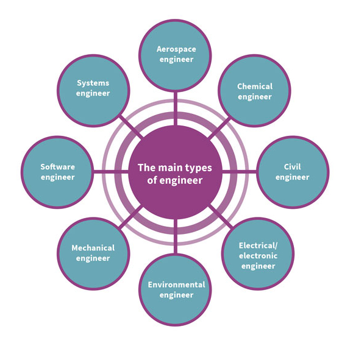
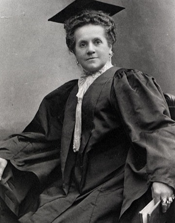
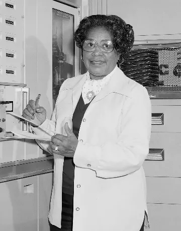
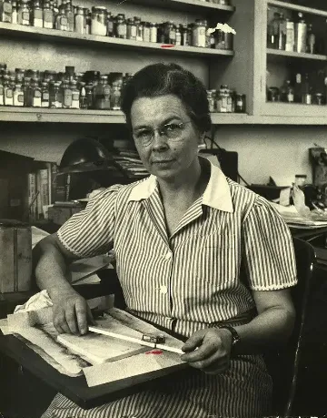
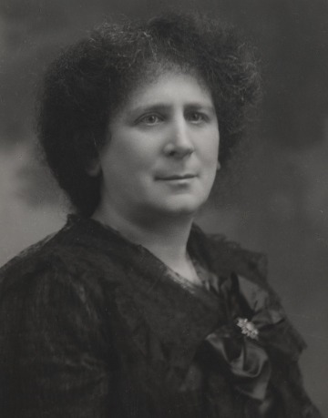
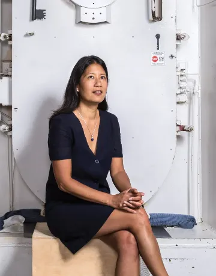

Engineering is extremely vast and has over 200 different career choices.
From the earliest inventors to today’s tech trailblazers, countless brilliant women in engineering have broken barriers and built the foundations of the modern world.
| Emily Warren Roebling 1843 - 1903  "I have more brains, common sense and know-how generally than have any two engineers, civil or uncivil." Emily Roebling was a crucial figure in the completion of the Brooklyn Bridge, stepping in as chief engineer when her husband fell ill. She dedicated 11 years to the project, managing finances, coordinating with workers and politicians, and enhancing her engineering knowledge. The bridge was completed in 1883, symbolizing innovation, yet Emily's contributions remained largely unrecognized until recent years. |
Mary Jackson 1921 -2005  "Every time we get a chance to get ahead, they move the finish line." Mary Jackson was a pioneering American mathematician and aerospace engineer, recognized as the first Black female engineer at NASA. Despite facing significant prejudice, she excelled academically and contributed significantly to the US space program. Jackson dedicated her career to assisting other women and minorities in the science fields, even taking a demotion to enhance her ability to support them. |
| Edith Clarke 1883 - 1959  "There is no demand for women engineers, as such, as there are for women doctors; but there's always a demand for anyone who can do a good piece of work." Edith Clarke was a pioneering American electrical engineer and inventor, best known for creating the Clarke calculator to solve complex electrical problems. The first woman to earn an electrical engineering degree from MIT and to teach the subject at the University of Texas, she advanced power system analysis and developed graphical methods that shaped modern electrical engineering. |
Ruzena Bajcsy 1933 - Now "We are engineers... in order to understand things, we have to build them." American engineer and computer scientist Ruzena Bajcsy is a pioneering figure in robotics and artificial intelligence, who founded the General Robotics, Automation, Sensing, and Perception (GRASP) Lab at the University of Pennsylvania. Her work has been instrumental in advancing human-robot interaction. She is currently the NEC Distinguished Professor of Electrical Engineering and Computer Sciences at the University of California at Berkeley |
| Phoebe Sarah Hertha Ayrton 1854-1923  “An error that ascribes to a man what was actually the work of a woman has more lives than a cat.” Hertha Ayrton was a British engineer, mathematician, and inventor who studied electric arcs and ripples in water and sand. Her research improved electric lighting and earned her the Hughes Medal from the Royal Society in 1906—a rare honor for a woman in her time. Hertha proved that engineering is about curiosity and precision, not gender. Her determination opened doors for generations of women in science and technology. |
MiMi Aung 1968 - Now  "One day humans will get to Mars and explore, and I simply see women there just as much as men." MiMi Aung is a Burmese-American engineer. Born in the United States and raised in Myanmar, MiMi became a lead engineer at NASA's Jet Propulsion Laboratory and was the project manager for the Mars Ingenuity helicopter, the first aircraft to achieve powered, controlled flight on another planet. Her work is a significant modern achievement in aerospace engineering. |
Women remain
underrepresented in STEM occupations
of students in STEM-related fields are women
Only 33% of young girls are in STEM by the time they reach highschool